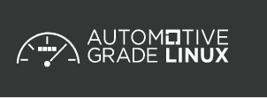
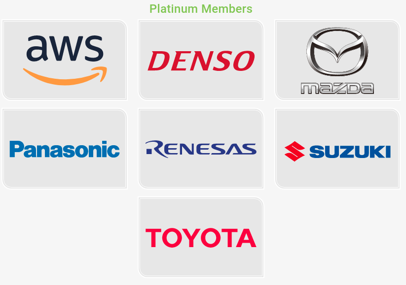
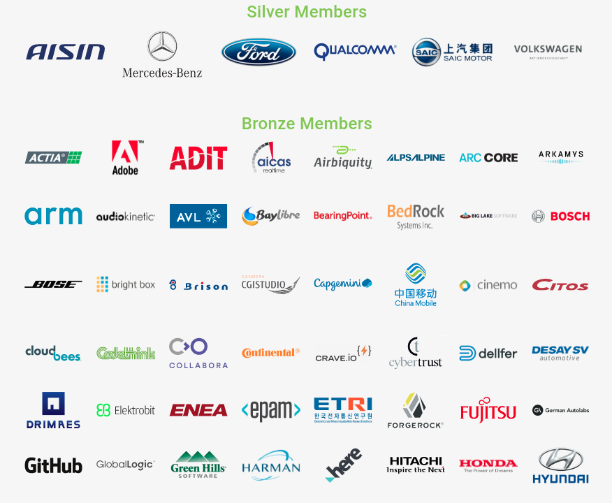
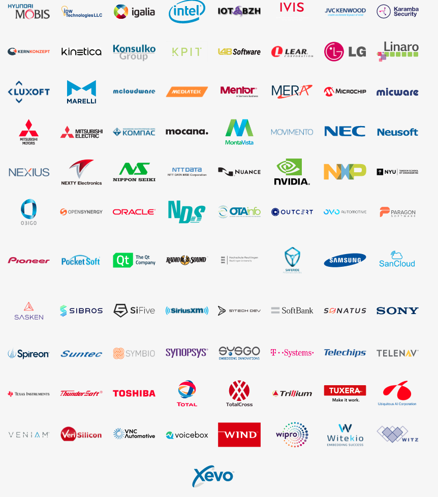
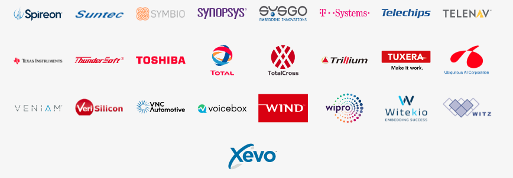

Created: 2021-07-14 Wed 12:16
Automotive Grade Linux is a collaborative open source project that is bringing together automakers, suppliers and technology companies to accelerate the development and adoption of a fully open software stack for the connected car. With Linux at its core, AGL is developing an open platform from the ground up that can serve as the de facto industry standard to enable rapid development of new features and technologies.





“The flexibility of the AGL platform allows us to quickly roll-out Toyota’s infotainment system across our vehicle line-up, providing customers with greater connectivity and new functionalities at a pace that is more consistent with consumer technology. Adopting an open source development approach has enabled us to focus resources on developing innovative new features and bringing them to market faster.” – Keiji Yamamoto, Executive Vice President, Connected Company of Toyota Motor Corporation
“It has become clear that fast innovation cycles and flexible software architecture are key for the successful development of business applications, which is why we are using AGL as a foundation for our new onboard operating system. Using a standardized, open operating system like AGL enables us to rapidly develop new commercial vehicle use cases such as robotic delivery, data analytics and prediction and automation technologies.” – Thomas Wurdig, Head of Onboard-System Architecture and IoT, Mercedes-Benz Vans